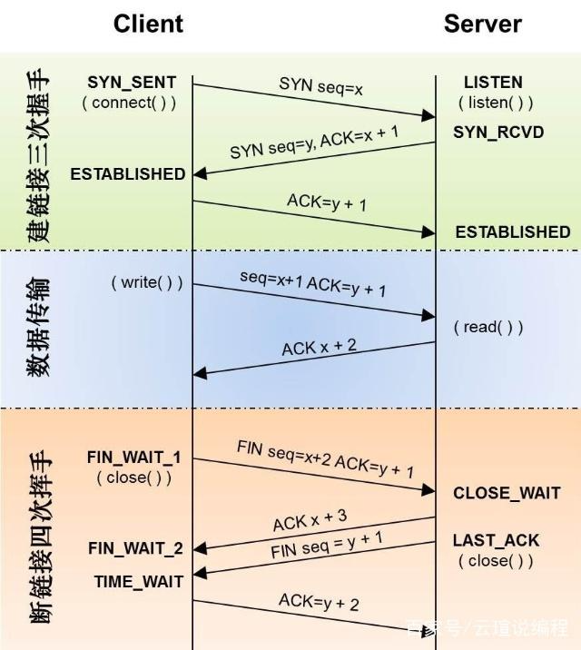
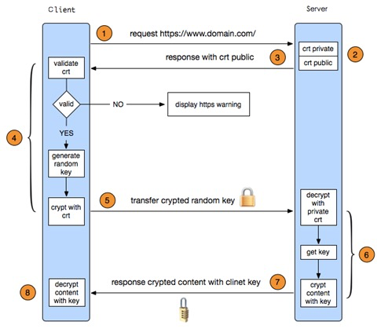
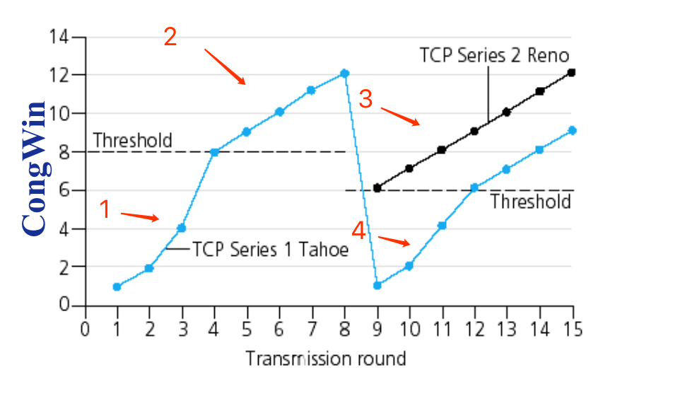

计算机网络
TCP的握手过程？为什么进行三次握手，四次挥手

HTTPS的握手过程
- 建立服务器443端口连接
- SSL握手：证书，随机密钥，加密算法
- 发送加密请求
- 发送加密响应
- 关闭SSL
- 关闭TCP

什么是中间人攻击？怎么预防？
- 中间人把自己的公钥给到客户端，之后用自己的私钥解开客户端数据，再用后台的公钥加密数据，发给后台。这样中间人能拿到双端的数据。 一般禁止接入代理和在代码内比对证书。
charles抓包过程？不使用charles，4G网络如何抓包
- 运行charles，手机配置代理。如果是http协议，charles能看到所有的请求和返回数据。如果要看到https的数据，需要在手机上安装charles证书，并信任证书。
- 4G网络，如果是安卓设备，用Packet Capture、tshark或者tcpdump。如果是iOS设备，用Fiddler、tcpdump和wireshark。
TCP和UDP的区别
-
TCP是IP网络上面向连接的流， 保证所有发送的包能够按照正确的顺序到达目的地。这意味着发送端要接受ACK包，包自动重传，相对于UDP来说会引起额外延迟以及传输效率更低。TCP还有拥塞控制，流量控制，错误校验等其他机制。
-
UDP是无连接传输协议，面向数据报传输，只保证单个数据报的正确性。数据报到达目的地，有可能会乱序，丢包，或者根本到达不了。由于它没有ACK，所以它比TCP传输效率更高。一般用在实时通讯，相对于TCP连接的开销，虽然存在较小丢包率，但更加适合。
-
在某些场合下,UDP用来广播包传输。这在例如DHCP协议有时候是最基本的，因为客户端并没有接收到IP地址(DHCP 协商协议目的)，这时候是没有办法在没有IP地址的情况下建立起TCP连接的。
TCP拥塞控制

- 慢启动、当 CongWin低于Threshold, 发送端在慢启动阶段，窗口指数增长。
- 加性增、当 CongWin高于Threshold, 发送端在拥塞避免阶段，窗口线性增长。
- 乘性减、当接收到三个重复的ACK，Threshold设置为CongWin/2，CongWin设置为Threshold。
- 重置、当超时发生的时候，Threshold设置为CongWin/2，CongWin设置为1MSS，重新跑1-3流程


本作品采用 知识署名-非商业性使用-禁止演绎 （BY-NC-ND） 4.0 国际许可协议 进行许可。